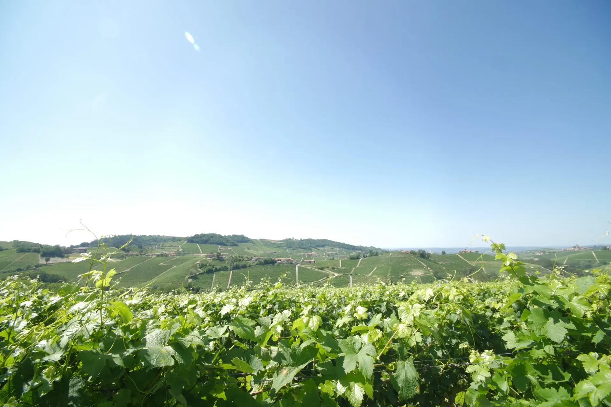

Citizenship Italia
Reclaim your Italian citizenship
by descent.
An Italian passport. The right to live, work, and travel freely across the European Union — passed down through your bloodline. Citizenship Italia handles everything from lineage research to citizenship recognition, end-to-end.
Client Stories
What families say about working with us
"Everything was taken care of! Translating the documents, certifying each document, and assembling the file to request citizenship. This made the process of getting my dual Italian citizenship easy and hassle free."
"The process moved quickly and at each step Aldo and his team took the time to explain the details to me. I recommend these services to anyone looking for professional and effective support for obtaining Italian citizenship."
"I contacted Aldo to begin the Italian citizenship process. Despite some missing information, they quickly obtained the necessary birth and death certificates. They also handled all apostilles and digitizations, assembling a complete file for submission. Their constant guidance and professionalism made the entire process seamless."
Join the families who've reclaimed their Italian citizenship
Book a free 30-minute consultation. We'll review your lineage, confirm your eligibility, and tell you exactly what to expect — no commitment required.
Free Consultation → Free 30-minute call · No obligation · Italian and English spokenEligibility Check
Find out if you qualify
in 2 minutes.
Answer a few quick questions and we'll tell you your recommended route — consulate, court, or 1948 case — and whether you're ready to book a free consultation.
- Free — no signup required
- Accounts for Law 74/2025 restrictions
- Book your free consultation at the end
Our Services
Three routes. One team. End-to-end.
Whether your path runs through a consulate, an Italian court, or the special 1948 route — we handle every step of the process for you.
Consulate Route
Apply through the Italian consulate for your area. Best for applicants who meet the current Article 3-bis rules and have complete documentation.
How the consulate route works →Court Route (ATQ)
Where a case needs a court's decision, or the administrative route cannot provide recognition in reasonable time, counsel may bring a court action (azione di accertamento). Assessed case by case.
How the court route works →1948 Court Cases
If citizenship passed through a woman before 1948, Italian law requires a court petition. Our Italian lawyers specialize in these cases.
How 1948 cases work →The Process
How we take you from
eligible to Italian citizen.
We handle everything from the first document request to the final certificate. You don't need to speak Italian, know Italian law, or travel to Italy — unless you want to.
Full Process Overview →Free Eligibility Consultation
We review your lineage, assess your documents, and confirm your route — consulate, court, or 1948 case — before you commit to anything.
Document Procurement
We obtain vital records from Italian municipalities, churches, and archives — including birth, marriage, death, and naturalization documents.
Translation & Apostille
Certified sworn translations into Italian and apostille legalization of all documents in your lineage chain.
Application Filing
We file your complete application — either with the Italian consulate or directly in Italian court — with full legal representation where required.
Citizenship Recognition
Your Italian citizenship is officially recognized. You can then apply for your Italian passport. Your children may also be able to acquire citizenship, depending on their age, birth date and residence; some require a formal declaration within set deadlines.
Transparent Pricing
Route-based pricing. No surprises.
Every case is different, but our pricing is always tied to the route and scope of your application — not hidden in fine print.
Consulate Route
Standard Application
Eligible under current rules, documentation complete or near-complete
What's included
- Eligibility assessment & lineage review
- Document procurement from Italian archives
- Certified translations & apostille
- Consulate application preparation & filing
Court Route (ATQ)
Full Legal Service
Consulate backlogs, complex cases, or time-sensitive resolution
What's included
- Everything in the Consulate Route, plus:
- Italian-licensed legal representation
- Court petition filing in Italy
- Full case management through judgment
1948 Cases
Maternal Line Court
Lineage through a female ancestor who transmitted citizenship before 1948
What's included
- Specialized 1948 case legal analysis
- Full document procurement & translation
- Italian court representation
- Full case management through judgment
All pricing confirmed after eligibility review. View full pricing details →
Our Team
The people handling your case
Citizenship specialists, document researchers, and Italian-licensed lawyers, with our legal team based in Turin, Italy.
Holds a Law Degree from the University of Turin and specializes in Italian citizenship by descent. Has guided 150+ families through the Jure Sanguinis process.
A dual Italian citizen himself, Spencer navigated the Jure Sanguinis process independently before joining Citizenship Italia to guide others through it.
Law Degree from the University of Naples. Italian-licensed lawyer focused exclusively on Jure Sanguinis since 2021. Handles all court petitions and 1948 cases.
Guides
Understand the rules before you start
Plain-English guides, reviewed for the rules in force in November 2026.

Eligibility
What "Exclusively Italian Citizenship" Means
The test most parent and grandparent claims now turn on, with examples for U.S. families.
Read guideLaw Status Tracker
EU Court Case C-816/26 Tracker
Dated timeline of the EU challenge to the 2025 law, and what a ruling could change.
Read guide
Eligibility
The Minor Issue After 2026
What the July 2026 Cassation ruling changed for naturalization dates.
Read guide
United States
Italian Consulates in the U.S.
Find the consulate for your state, with a guide to each.
Read guideEligibility
Reacquiring Citizenship by December 31, 2027
For former citizens born in Italy who lost citizenship by August 15, 1992.
Read guideFamilies
Registering Children Before May 31, 2029
How Italian parents secure citizenship for minor children born abroad.
Read guideCommon Questions
Frequently asked questions
Decree-Law 36/2025 of March 28, 2025, converted by Law 74/2025, added Article 3-bis to Italy's citizenship law. If you were born abroad and hold another citizenship, you now need a parent or grandparent who holds, or held at death, exclusively Italian citizenship, or a parent who lived in Italy for two continuous years after becoming a citizen and before your birth. Claims relying only on a great-grandparent or earlier ancestor no longer qualify for new applications. Cases started by 11:59 PM Rome time on March 27, 2025 follow the old rules. Learn more →
Your case follows the old rules if, by 11:59 PM Rome time on March 27, 2025, you had submitted a complete application, the consulate or municipality had communicated an appointment date to you (and you submit on that date), or a court case for your recognition had been filed. Otherwise, the current Article 3-bis rules apply, including for parent and grandparent claims.
Jure Sanguinis (literally "right of blood") is the Italian legal principle that allows descendants of Italian citizens to obtain Italian citizenship by proving uninterrupted lineage. Unlike naturalization, it's not a new grant of citizenship — it's a recognition that you were always an Italian citizen by birthright.
Most eligible applicants apply through the Italian consulate for their place of residence. A court case (azione di accertamento dello stato di cittadino italiano) is a litigation option that counsel may recommend where the administrative route cannot provide recognition within a reasonable time, or where the case needs a court's decision. Availability and risk are assessed case by case. 1948 cases — where citizenship was transmitted through a woman before 1948 — always require a court petition.
You generally need birth, marriage, and death certificates for each person in your lineage chain from your Italian ancestor to yourself, plus proof of non-naturalization (or naturalization timing) for your Italian ancestor and, since 2025, proof that you meet Article 3-bis (such as evidence that a parent or grandparent held only Italian citizenship). We help you identify exactly which documents are needed and obtain them — including records from Italian archives and municipal offices. View document checklist →
Consulate wait times vary widely by jurisdiction — often several years, and longer at the busiest offices. The court route typically takes 1–3 years from filing. We set clear expectations at the start of every engagement and keep you updated throughout.